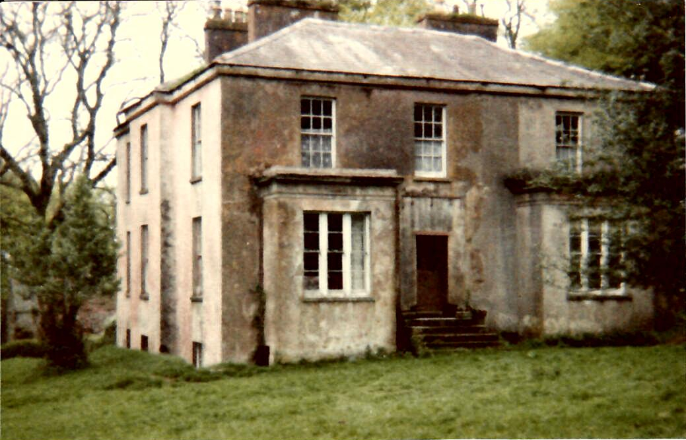
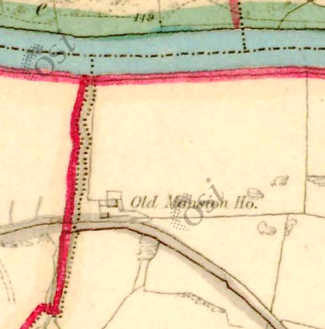
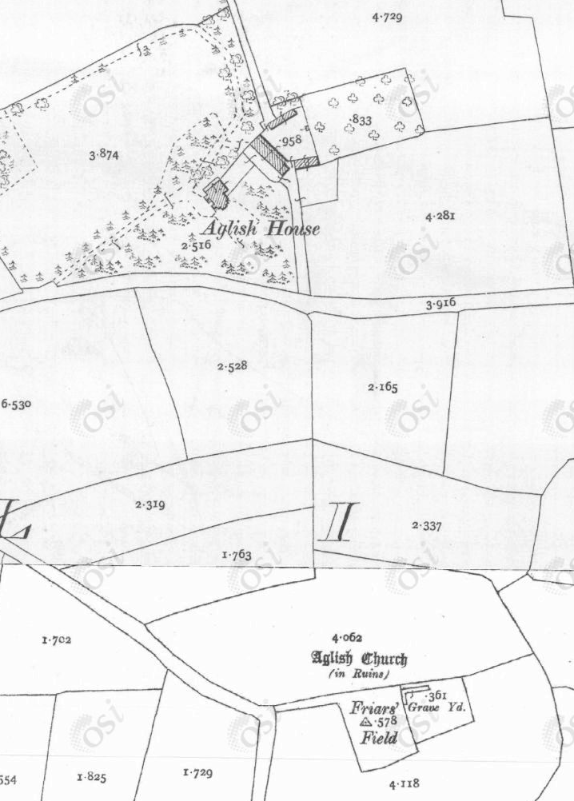
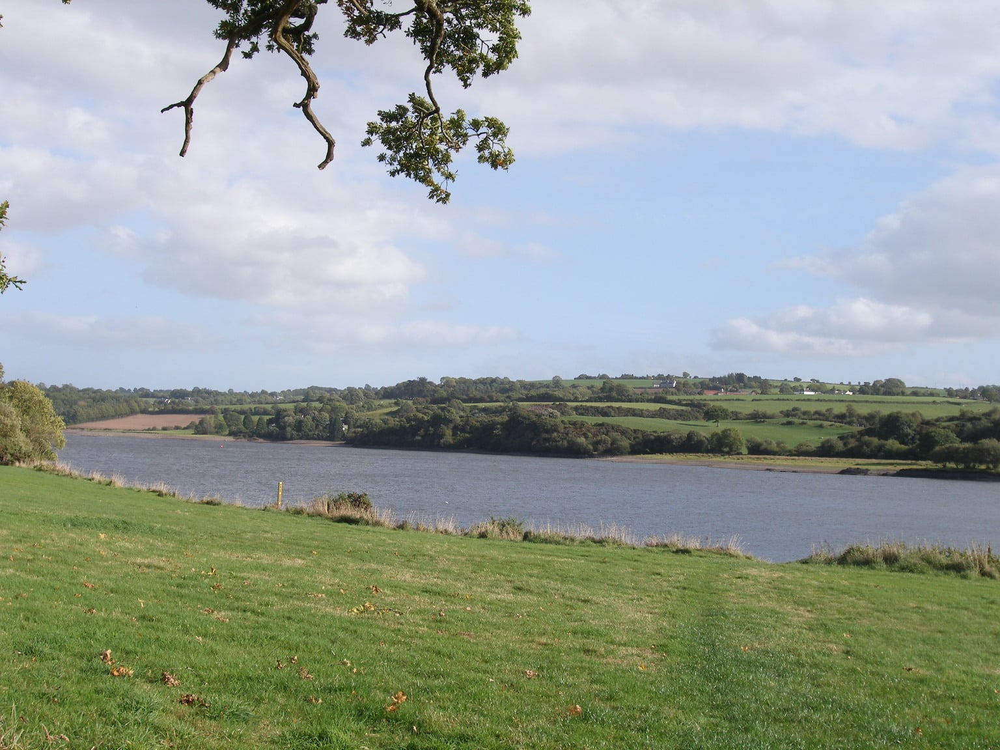
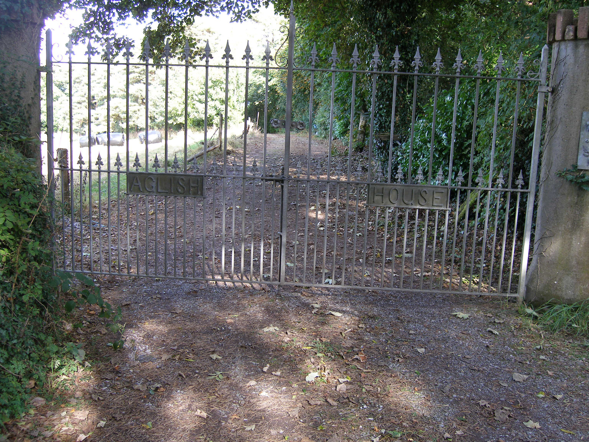
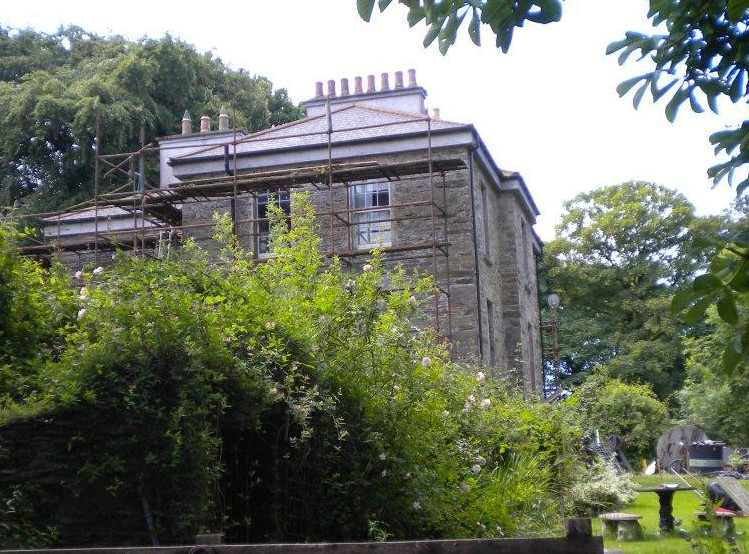

{kind=link}


The Hingstons in Tree HNA owned the estate of Aglish in Co. Cork, Ireland, for just over 200 years, from 1703 to 1907.
Aglish (Irish: An Eaglais, meaning "the church") is a Townland of 566 acres on the south bank of the river Lee, about 15 km west of the city of Cork. It lies at the centre of a Civil Parish of the same name. 6. James Hingston purchased the estate of Aglish, of 353 acres, in the Barony of East Muskerry, from the Trustees of Forfeited Estates on 29 Apr 1703 for the sum of £829 3s 0d. The estate had been forfeited by Teige McCorma mcCarthy of Muskerry in the Rebellion of 1642. The original title holder was, by Fiant of Queen Elizabeth in 1578, Sir Cormac McTeige McCarthy of Blarney, 14th Lord of Muskerry, who was described by the Lord Deputy of Ireland, Sir Henry Sidney as "the rarest man that ever was born among the Irishry". Teige, head of the McCarthy's of Aglish had picked the wrong side in the Civil War, remaining loyal to the Stuart King, and had his lands of 4,005 acres confiscated as a result.
There was almost certainly a McCarthy house at Aglish, probably fortified, and it is assumed that this was taken over by James. The oldest Ordnance Survey map (6 inch, colour, dated 1829-1847) shows an "Old Mansion House"; this seems to be the only substantial building within the township. It is located at 51.893583 North, 8.770639 West. The house stands beside the road from Cork to Macroom and Killarney , which crossed the Lee via the ancient Rooves Bridge about 2 km to the west. Possibly significantly, it was very close to the river, and may well have been liable to flooding.

The old house appears to have been demolished, and the new one built, around this time, possibly re-using the stone from the original. The black and white 6 inch Ordnance Survey map, which is also dated 1829-1847, does not show the Old Mansion, but instead shows "Aglish House", a more substantial building, a few hundred metres away, and further up the hill. It is at 51.887637 North, 8.763600 West. Its principal view would have been to the north west, overlooking the river, although today it is largely surrounded by trees so the panorama must be restricted; it appears not to be visible from any public place.

The new Aglish House is closer to the site of Aglish Church . This is clearly a very old foundation and is shown as being next door to a "Friar's Field". There was a Friary nearby at Kilcrea. Even in the 1830s this was shown as a ruin on the OSI maps, but the churchyard was still in use and it is believed there is a Hingston family tomb. The church is at 51.884569 North, 8.761442 West.
In the second half of the 19th century the family seems to have fallen on harder times. In 1863 59.James put the whole contents of the house up for sale, and in 1873 his widow put the house, "which is in perfect order", and 30 acres of land to rent. It is believed that the house was finally sold by 57.Richard in 1907. Subsequently it has found several uses, including at one time being a children's home.
In the 1950s a dam was built across the River Lee at Inniscarra, downstream of Aglish, to generate electricity and to control flooding in the city of Cork. This resulted in a lake, which flooded the ancient Rooves Bridge and also the site of the Old Mansion House.

|
 |
|
|
|
|
 |
 |
Return to Hingston One-Name Study
Added 19th December 2020. Chris Burgoyne